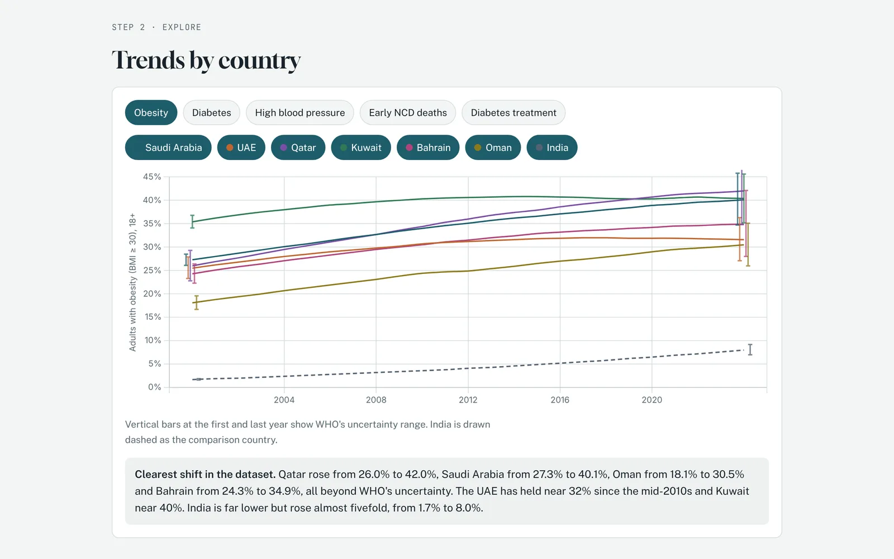

Gulf Chronic Disease Watch
Separates real chronic disease trends in the Gulf from noise, using the WHO's own uncertainty ranges.
- Year
- 2026
- Type
- Data project
- Built for
- Population health and payer teams

The problem
Health headlines about the Gulf quote diabetes and obesity rates without the error bars behind them. Some of the changes people cite fall inside the WHO's own uncertainty range, so the data can't confirm them.
Population health teams and insurers who plan around those numbers risk acting on changes that may not be real.
What I built
An interactive dashboard covering five indicators across the six GCC states and India, from 2000 to the latest WHO estimate.
- A "what moved" grid that marks each change as a clear rise, a clear fall, or within uncertainty.
- A trend explorer with uncertainty bars, a pandemic anomaly check, and a payer view of diabetes treatment coverage.
- Seven data quirks, written up in plain language, that change how the numbers should be read.
Built with: WHO Global Health Observatory API, Python, Chart.js, HTML, CSS, Claude
How I approached it
- UserPeople who need to know which shifts are real before they act. So the first thing on the page is a verdict for each country and indicator, not a chart to decode.
- ConstraintsWHO figures are model estimates with wide ranges. A change only counts as clear when the 2000 and latest ranges don't overlap, and I checked all 35 data series against the raw API.
- Trade-offsI used a z-score anomaly test only for premature deaths. On the smooth, modelled series it would flag almost every year, so I documented that limit instead of showing misleading flags.
What it shows about me
I question data before I trust it, and I explain its limits as clearly as its findings.
Dubai Health Money Radar
A weekly, plain-English record of who pays for healthcare in Dubai and what just changed.